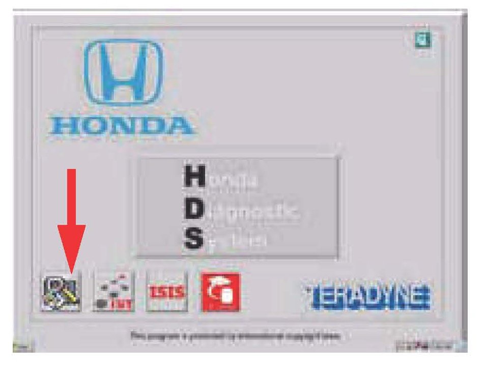
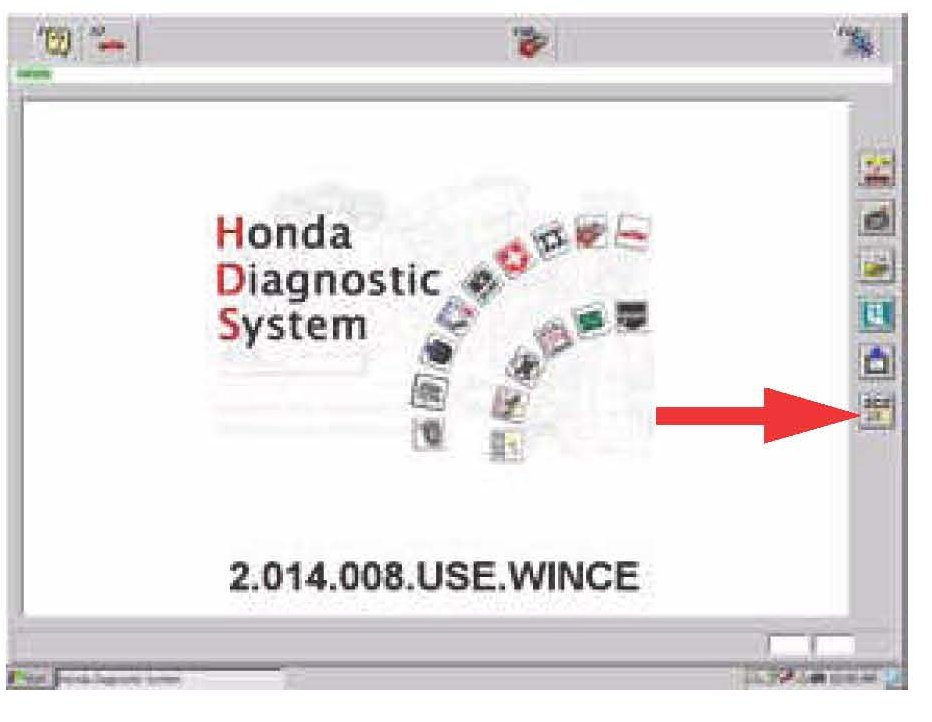
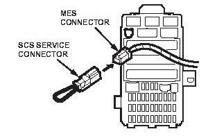
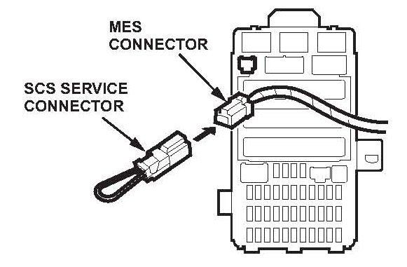

Restraints - Occupant Detection System Initialization
08-041June 7, 2008
Applies To:
2007 08 Civic ALL
2007-08 Civic Hybrid - ALL
ODS Unit Initialization, ODS Unit Calibration, and Seat Weight Sensor Output Check With Manual Mode
BACKGROUND
The 2006 2008 Civic Service Manual shows procedures for the occupant detection system (ODS) unit initialization, the ODS unit calibration, and the front passenger's seat weight sensor output check after a vehicle collision These procedures are normally done by following the on-screen instructions on the HDS Due to some software variations between the SRS unit and the ODS unit in some vehicles, when doing one of these procedures, the HDS may indicate to do the procedure with manual mode However these manual mode procedures are not in the service manual In these cases, follow the procedures in this bulletin to do the ODS unit initialization, the ODS unit calibration or the front passenger's seat weight sensor output check with manual mode
NOTE
Even though these procedures are done manually, an HDS is still required.
This bulletin covers these procedures
^ ODS Unit Initialization With Manual Mode
^ ODS Unit Calibration With Manual Mode
^ Front Passengers Seat Weight Sensors Output Check After a Vehicle Collision With Manual Mode
TOOL INFORMATION
SCS Service Connector:
P/N O7PAZ0010100
H/C 4231189
ODS UNIT INITIALIZATION WITH MANUAL MODE
NOTE:
Initialize the ODS unit after replacing the seat back cover, the seat back cushion, and/or the ODS unit.
1. Make sure there are no SRS DTCs
NOTE:
A new (uninitialized) ODS unit installed with a faulty OPDS sensor can cause DTC 85-71. If you read this DTC, continue with this procedure.
2. Adjust the front passenger's seat to its most rearward position, and adjust the seat back to a normal upright position Make sure to remove items that are on, under, or near the seat
3. Turn the ignition switch to LOCK (0).
4. If not already connected, connect the HDS to the DLC, then turn on the HDS, but do not turn the ignition switch to ON (II)

5. Select the Diagnostic System icon to run the HDS

6. Select the SCS icon.
7. On the next screen, select YES to short the SCS line. After the line is shorted, the odometer flashes no.

8. Connect the SCS service connector to the 2P memory erase signal (MES) connector. Do not use a jumper wire.
9. Turn the ignition switch to ON (II).
10. After turning the ignition switch to ON (II), the SRS indicator comes on for 6 seconds and then goes off. Within 4 seconds after the indicator goes off, disconnect the SCS service connector from the MES connector.
11. Within 4 seconds after the SRS indicator comes on again, reconnect the SCS service connector to the MES connector.
12. Within 4 seconds after the SRS indicator goes off, disconnect the SCS service connector from the MES connector.
13. Watch the SRS indicator:
^ If the SRS indicator blinks twice and then goes off, the ODS unit is initialized. Go to ODS UNIT CALIBRATION WITH MANUAL MODE.
^ If the SRS indicator blinks twice and then stays on, the ODS unit is initialized, but there are SRS DTCs that need to be cleared. Go to step 14.
^ If the SRS indicator stays on (does not blink), the ODS unit is not initialized. Repeat steps 3 thru 13. If after three attempts you cannot initialize the ODS unit, refer to symptom troubleshooting in the service manual.
14. Turn the ignition switch to LOCK (0).
15. Disconnect the HDS.
16. Connect the SCS service connector to the MES connector. Do not use a jumper wire.
17. Turn the ignition switch to ON (II).
18. After turning the ignition switch to ON (II), the SRS indicator comes on for 6 seconds and then goes off. Within 4 seconds after the indicator goes off, disconnect the SCS service connector from the MES connector.
19. Within 4 seconds after the SRS indicator comes on again, reconnect the SCS service connector to the MES connector.
20. Within 4 seconds after the SRS indicator goes off, disconnect the SCS service connector from the MES connector. The SRS indicator blinks twice to indicate the SRS unit memory has been cleared.
21. Turn the ignition switch to LOCK (0), and wait for 10 seconds.
22. Turn the ignition switch to ON (0). The SRS indicator should come on for 6 seconds and then go off. If the indicator stays on, repeat steps 14 thru 22. If after doing those steps the indicator continues to stay on, read and troubleshoot the SRS DTCs or refer to symptom troubleshooting.
23. Use the HDS to remove the short on the SCS line.
ODS UNIT CALIBRATION WITH MANUAL MODE
NOTE:
Always calibrate the ODS unit after replacing any of the front passenger's seat components (except the ODS unit or the seat weight sensors), after a vehicle collision, or after replacing the SRS unit.
1. Make sure there are no SRS DTCs.
2. Adjust the front passengers seat to its most rearward position, and adjust the seat-back to the forward-most position. Make sure to remove items that are on, under, or near the seat.
3. Turn the ignition switch to LOCK (0).
4. If not already connected, connect the HDS to the DLC, then turn on the HDS (but do not turn the ignition switch to ON (II).
5. Select the Diagnostic System icon to run the HDS.
6. Select the SCS icon.
7. On the next screen, select YES to short the SCS line. After the line is shorted, the odometer display flashes no.
8. Buckle the driver's seat belt.
9. Turn the ignition switch to ON (II).
10. After turning the ignition switch to ON (II), the SRS indicator comes on for 6 seconds and then goes off. Within 4 seconds after the indicator goes off, unbuckle the driver's seat belt.
11. Within 4 seconds after the SRS indicator comes on again, buckle the driver's seat belt.
12. Within 4 seconds after the SRS indicator goes off, unbuckle the driver's seat belt.
13. Watch the SRS indicator:
^ If the SRS indicator blinks twice and then goes off, the ODS unit is calibrated. Turn the ignition switch to LOCK (0), then go to FRONT PASSENGER'S SEAT WEIGHT SENSOR OUTPUT CHECK AFTER A VEHICLE COLLISION WITH MANUAL MODE.
^ If the SRS indicator blinks twice and then stays on, the ODS unit is calibrated, but there are SRS DTCs that need to be cleared. Go to step 14.
^ If the SRS indicator stays on (does not blink), the ODS unit is not calibrated. Repeat steps 8 thru 13. If after three attempts the ODS unit does not calibrate, refer to symptom troubleshooting in the service manual.
14. Turn the ignition switch to LOCK (0).
15. Disconnect the HDS.

16. Connect the SCS service connector to the 2P memory erase signal (MES) connector. Do not use a jumper wire.
17. Turn the ignition switch to ON (II).
18. After turning the ignition switch to ON (II), the SRS indicator comes on for 6 seconds and then goes off. Within 4 seconds after the indicator goes off, disconnect the SCS service connector from the MES connector.
19. Within 4 seconds after the SRS indicator comes on again, reconnect the SCS service connector to the MES connector.
20. Within 4 seconds after the SRS indicator goes off, disconnect the SCS service connector from the MES connector. The SRS indicator blinks twice to indicate the SRS unit memory has been cleared.
21. Turn the ignition switch to LOCK (0), and wait for 10 seconds.
22. Turn the ignition switch to ON (I I). The SRS indicator should come on for 6 seconds and then go off. If the indicator stays on, repeat steps 14 thru 22. If after doing those steps the indicator continues to stay on, read and troubleshoot the SRS DTCs or refer to symptom troubleshooting.
23. Use the HDS to remove the short on the SCS line.
FRONT PASSENGER'S SEAT WEIGHT SENSOR
OUTPUT CHECK AFTER A VEHICLE COLLISION
WITH MANUAL MODE
NOTE:
^ Always check the front passenger's seat weight sensor output after replacing any of the front passenger's seat components, except the ODS unit, and after a vehicle collision.
^ Make sure the SCS line is not shorted by the HDS.
1. Adjust the front passenger's seat to its most rearward position, and adjust the seat-back to a normal upright position. Make sure to remove items that are on, under, or near the seat.
2. Turn the ignition switch to ON (II), and wait for the passenger airbag OFF indicator to go off.
3. Apply the specified weight to the front passenger's seat:
^ 4-door: 58 pounds. (A case of Honda coolant is 58 pounds.)
^ 2-door: 64 pounds. (A case of Honda coolant and a 1 gallon jug of VTM-4 fluid is 64 pounds.)
4. For 2-door models: Firmly tap on the headrest twice to release any stiction that may be present in the seat weight sensors.
5. Watch the passenger airbag OFF indicator. The indicator should come on and stay on. If the indicator does not come on, check for SRS DTCs and troubleshoot them.
6. Add another 15-20 pounds of weight to the front passenger's seat.
7. For 2-door models: Firmly tap on the headrest twice.
8. Watch the passenger airbag OFF indicator. The indicator should go off.
^ If the indicator goes off, the front passenger's weight sensors are OK.
^ If the indicator does not go off, check for SRS DTCs and troubleshoot them, then repeat steps 1 thru 8.